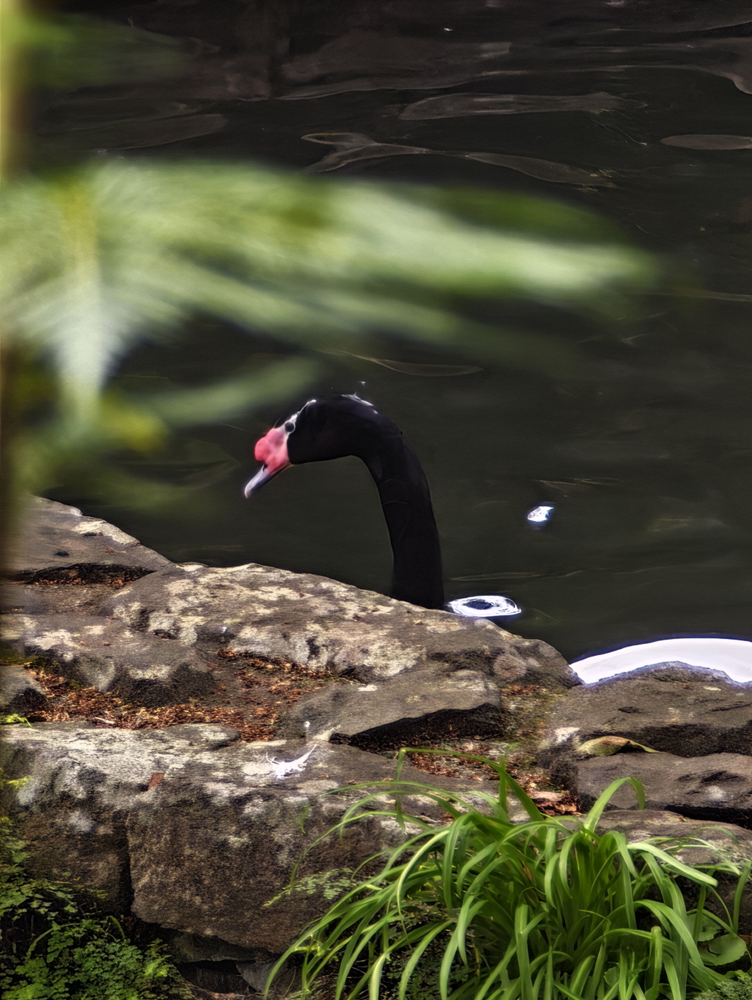

Design de Comunicação · Fotografia · Arte Digital
Sou um designer e fotógrafo apaixonado pela estética Bauhaus e pelo minimalismo funcional. O meu trabalho explora a intersecção entre forma geométrica e comunicação visual, criando peças que são simultaneamente belas e utilitárias.
PÁGINAS WEB.
Estou a aprender